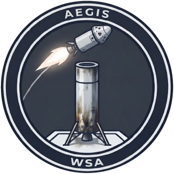

WSA's major vehicle families and aerospace programs.
A searchable registry of WSA vehicles, landers and station hardware. Select a vehicle for its documented details. Unknown values are left out rather than estimated.
Aegis is WSA's proven reusable booster family, developed from early recovery experiments to reliable, flight-tested hardware. The family includes multiple configurations optimized for different mission payloads and operational scenarios.

Aegis evolved through multiple iterations as WSA tested recovery methods, refined booster structure, and improved landing guidance:
Aegis configurations are named for their engine count or capability tier:
Note: Configuration designations describe relative capability within the Aegis family. Precise performance specifications vary by test and mission profile. All configurations have demonstrated autonomous landing capability.
Aegis boosters use AutoLand autonomous guidance for reliable recovery:
See the AutoLand Engineering page for detailed guidance system documentation.
WSA is exploring advanced multi-booster recovery architectures:
Concept for recovering side boosters on a multi-booster configuration. Involves coordinating separation, staging, and autonomous recovery of multiple vehicle segments.
Architecture for recovering the main booster stage after upper-stage separation. Requires management of velocity reduction, attitude control, and autonomous targeting.
Heavy-lift configuration combining multiple Aegis-class boosters with single recoverable main stage. Intended for FAMMOK-3 deep-space rescue missions.
Aegis development involved failures that drove important engineering improvements:
Each failure led to documented improvements. The 47+ successful recoveries represent learning accumulated through test flights and operational missions.
Operational Status: Aegis family is mature and operationally ready for regular missions.
Lyra represents a new direction in WSA's launch-vehicle development. Built on lessons from Aegis, Lyra offers higher capacity, refined staging, and improved operational efficiency for supporting KGOSS expansion and more ambitious mission architectures.
Lyra was designed to address lessons from Aegis development and requirements for future WSA missions:
Lyra's capability is organized into three named tiers rather than simple variant lists:
Entry-level variant optimized for rapid turnaround and frequent operations. Lower payload capacity supports small-satellite deployment, crew rotation for orbital stations, and subscale mission testing.
Primary operational configuration balancing payload capacity, operational cost, and mission flexibility. Designed as the workhorse for regular logistics, medium-mass payloads, and diverse mission profiles.
High-capacity variant for ambitious missions. Maximum payload envelope supports KGOSS module delivery, crewed deep-space missions, and scientific payloads. Designed for orbital infrastructure deployment.
Note: All three tiers share common booster architecture, AutoLand guidance system, and recovery procedures. Scaling focuses on payload section, engine arrangement, and propellant capacity.
Lyra P-1E: Prototype 1 Experimental—the current development vehicle for the Lyra family.
Development Timeline: P-1E first flight is the critical path item for Lyra program. Completion allows qualification testing and transition to operational Selene, Sol, and Astra variants.
Lyra development has explored various engine arrangements to optimize thrust, cost, and performance:
Note: Engine arrangements are design concepts undergoing validation. Final configurations will be determined through testing and operational requirements.
Lyra is essential to several WSA strategic goals:
WSA operates experimental aircraft and spaceplane programs to develop flight-control concepts, test atmospheric aerodynamics, and explore reusable orbital transportation.
Swift-1X is a stable, fast, small aircraft used for testing flight-control concepts, atmospheric handling, and aerodynamic behavior.
WSA has developed several spaceplane concepts for crew transport and return:
Crew transport and return configuration designed for safe entry, recovery, and logistics operations.
Alternative crew transport and spaceplane development series. Status and capabilities under evaluation.
Detailed specifications for these configurations are still being documented. Additional information will be added as crew-transport programs progress.
WSA maintains several experimental aircraft and spaceplane development lines:
Most of these experimental designations have limited operational history. Detailed records will be added as projects mature and documented results become available.
Single-stage-to-orbit (SSTO) development explores whether a spaceplane can reach orbit without staging:
A developing SSTO concept based on Mk2 spaceplane fuselage has evolved to approximately 80 tonnes after design iterations.
Atmospheric Phase:
Orbital Phase:
Development Challenges:
Key Lesson: Reaching orbit is not the same as completing a mission. Systems must be designed not just to achieve altitude, but to perform the full mission profile including rendezvous, docking, and return. SSTO designers must balance fuel for ascent, orbital maneuvers, and return—a difficult trade on a single stage.
Current Status: SSTO development continues as an experimental program. The fundamental trade-offs between atmospheric efficiency, orbital capability, and mission flexibility remain active research areas.